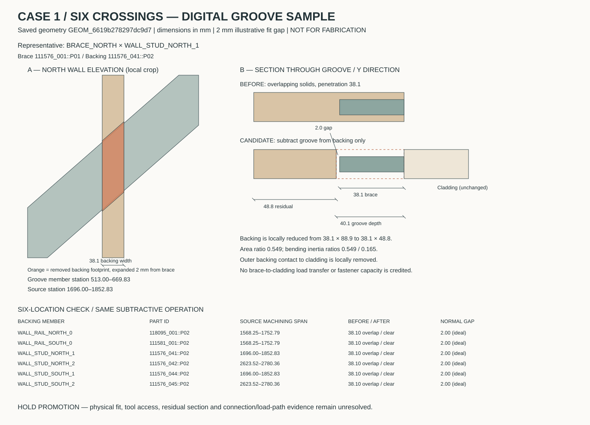
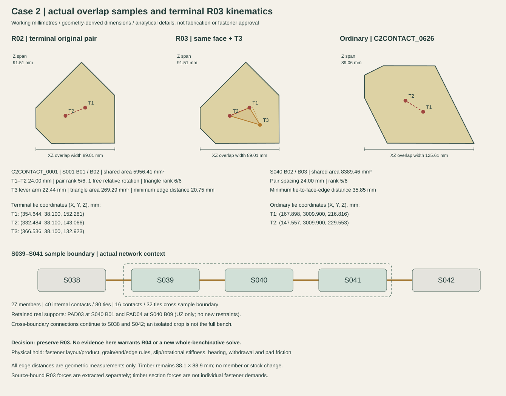
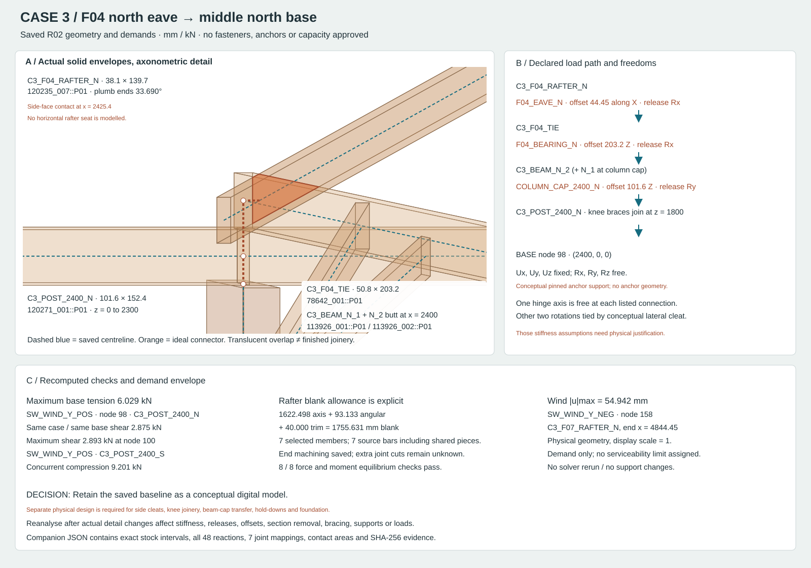

PRIORITIES 3 + 4 / DIGITAL CHECKS COMPLETED
Test the detail.
Then decide what should change.
Three representative studies use the actual saved geometry, source intervals and analysis records. This pass adds geometric and kinematic checks. No physical sample has been made or load-tested.
Case 1Groove candidate tested; not adopted.
Case 2Terminal triangle checked; retain R03.
Case 3Eave-to-base demands checked; physical detailing open.
01 / CUBBYHOUSE / SIX ACTUAL BRACE–BACKING CROSSINGS
A clear fit can still be a poor structural detail.

Test performedSubtract six explicit backing grooves in a separate digital candidate. All six 38.1 mm interferences clear with a 2 mm illustrative gap; 924 changed-part pair checks find no new interference. Added machining loss: 1.186 litres.
Reason to withhold adoptionThe local backing section becomes 38.1 × 48.8 mm: only 54.9% of the original area and 16.5% of one bending second moment remain. Ten cladding contact patches also lose area. These are geometric section properties, not a capacity check.
Decision: keep the accepted geometry; do not promote the groove candidate. A simple brace translation was also screened: outward movement disrupts post-end contact and enters cladding; inward movement intersects the posts. The candidate is a digital fit experiment, not a machining instruction.
Representative: BRACE_NORTH × WALL_STUD_NORTH_1. The 2 mm gap is an illustrative screen, not a verified tolerance. Any adopted machining would need revised sections, cladding load transfer and subsequent analysis; source intervals and the current cut ledger have not changed.
02 / CONTOUR BENCH / TERMINAL + ORDINARY OVERLAP
The third point removes the identified relative rotation.

Independent local checkC2CONTACT_0001 has 5956.41 mm² of shared face. All three R03 points lie inside it. The original pair has constraint rank 5/6; the triangle has rank 6/6, with a 22.44 mm transverse lever arm. The ordinary pair remains rank 5/6 as intended.
Sample and whole-bench boundaryS039–S041 contains 27 strips and 40 internal contact groups; 16 groups continue to S038/S042. The crop is not artificially fixed. Its existing supports and external relationships are retained. The unchanged full R03 certificate reports rank 4296/4296.
Decision: retain R03; no R04 or new whole-bench solve is justified by these checks. Geometric point spacing is not a verified screw layout. The 2133 extracted timber force rows are source-checked section forces, not individual fastener demands.
Physical samples still need to establish fastener layout/capacity, slip and rotational stiffness, timber splitting behaviour, levelling-pad bearing and friction. No R02 force/displacement improvement percentage is used.
Inspect the retained S039–S041 detail · Inspect saved R03
03 / OPEN PAVILION / F04 NORTH EAVE → MIDDLE NORTH BASE
Follow the actual contact and the actual reaction.

Geometry and ledger checkedSeven members, seven stock bars and seven joint groups were checked. Rafter blank: 1622.498 mm axis + 93.133 mm angled-end allowance + 40 mm trim = 1755.631 mm. Source intervals, existing end losses and eight saved equilibrium checks reconcile.
Physical detail still missingThe rafter–tie interface is a vertical side contact, not a horizontal gravity seat. Both beam halves touch the tie, but the analytical bearing names N2 only. Knee-end solids still overlap; extra joint machining and transfer through cleats have not been designed.
Saved reaction demands: maxima are not combined across different bases.| Check | Location / load case | Concurrent response |
|---|
| Maximum tension: 6.029 kN | North middle base, node 98
SW_WIND_Y_POS | Same base shear: 2.875 kN |
|---|
| Maximum shear: 2.893 kN | South middle base, node 100
SW_WIND_Y_POS | Same base compression: 9.201 kN |
|---|
| Maximum wind displacement: 54.942 mm | C3_F07_RAFTER_N, node 158
SW_WIND_Y_NEG | Actual displacement magnitude; no display exaggeration |
|---|
Decision: retain the preliminary baseline; do not treat its supports as verified hardware. These are demand values under the recorded assumptions. A physical cleat, knee joint and tension/shear foundation detail is needed before construction use. No anchorage capacity or serviceability pass is claimed.
04 / DECISION AFTER VALIDATION
No unsupported revision was promoted.
Accepted geometries, successful allocations, analysis baselines and videos remain unchanged. The only new geometry is the separate, unadopted Case 1 groove experiment.
- Allocation: no rerun; accepted member lengths, sections, quantities and source intervals are unchanged.
- Analysis: no new native solve; there is no adopted change to supports, loads or connection parameters. Independent geometry and local kinematic checks were executed.
- When a later revision is warranted: a resolved physical detail changes a section, contact/load path, offset, joint stiffness/release or support. Bind that detail to a separate revision and rerun the affected analysis; rerun allocation only if its demand or stock processing changes.
Physical stage remains open. No timber was cut or loaded in this digital pass. Required evidence is specific: Case 1 backing/contact behaviour; Case 2 actual fastener slip/rotation and bearing friction; Case 3 cleat/knee transfer and concurrent anchor tension/shear.
Records and interpretation basis
Three-case digital check and revision record. The ZIP includes the dimensioned SVGs, source-bound check records, reproducible scripts and Case 1 before/candidate OBJ samples.
Karamba's Beam-Joints documentation describes analytical joint freedoms and stiffness. Actual timber fastener behaviour also depends on the connection and placement rules described in AWC's connection-design reference (2018, explanatory reference). Neither reference has been applied here as a completed code-capacity check.